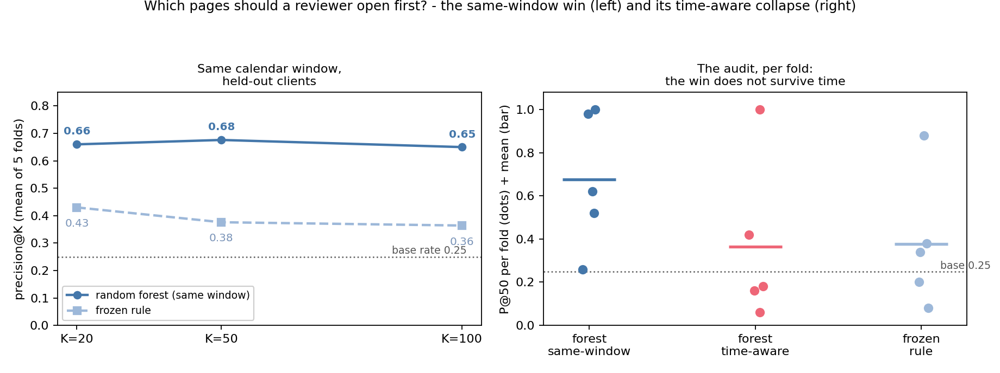
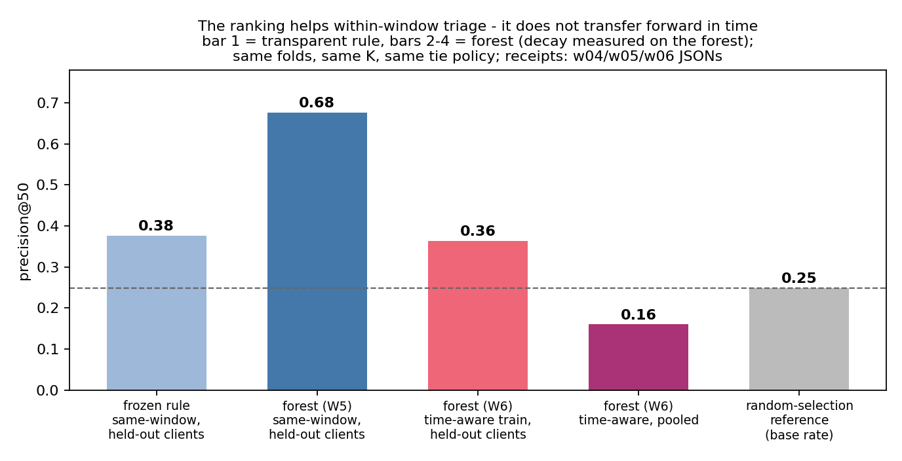
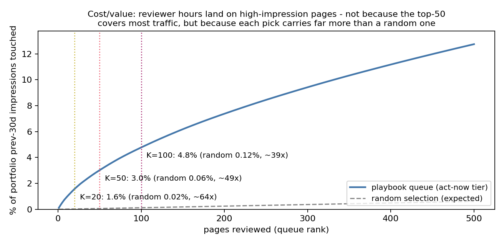
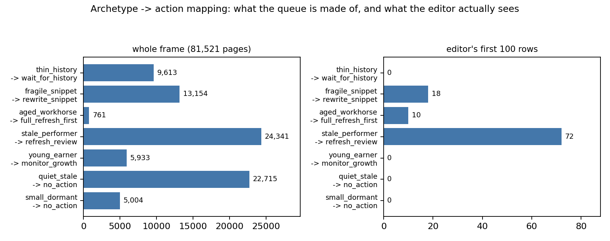

0.68 → 0.36
precision@50, same-window grouped folds → time-aware mean-fold.
Base rate 0.2487 always shown beside the number.
Base rate 0.2487 always shown beside the number.
A ranking on 78.8 M rows of pseudonymized production search data, validated the hard way: a 0.68 same-window ranking collapsed to 0.36 mean-fold / 0.16 pooled under a time-aware split. The shipped playbook runs on the transparent rule with structural human review.
Problem. A content team has a ~50-row monthly review budget; the decision this supports is the order of that review, so precision@50 was fixed before training.
Setting. The source is a 78.8 M-row pseudonymized warehouse release; the development frame is 81,521 eligible items at the March 2026 decision point, validation grouped by client.
Approach. A transparent rule (stale + visible, score = traffic at stake) is compared with logistic regression, a depth-3 tree, and a five-feature random forest on identical folds.
Evidence. On held-out clients in the same calendar window the forest's mean P@50 is 0.676 ± 0.282 vs the rule's 0.376 ± 0.273 (base rate 0.2487); higher than the rule in 4 of 5 folds. A time-aware protocol drops the same model to 0.364 mean-fold (folds 0.06–1.00) and 0.16 pooled — below random — with time-only P@50 0.12.
Scope. One walk-forward window is thin temporal evidence; the same-window advantage does not transfer forward, and no causal claim about refresh impact is made. Code, seeds, environment, and a result-to-notebook map are committed.
A page that loses organic traffic silently costs it until someone notices. The practical decision is not “will this page decline?” in the abstract — it is which pages should a reviewer open first this month? This paper reports a decision-support ranker for that queue, evaluated the way it would be used: grouped by client, walked forward in time, and audited against a base rate that is shown beside every number.
The interesting story is not the win. A small random forest beat a transparent rule on held-out clients in the same calendar window (0.68 vs 0.38 precision@50, base rate 0.25, higher in 4 of 5 folds). The interesting story is what a time-aware validation did to that number: it fell to 0.36 mean-fold and 0.16 pooled — below random — with the audit-window fold spread running 0.06–1.00. The honest queue therefore runs on the transparent rule, and the paper's headline is the audit rather than the same-window win.
Three reading depths.
Scan: the TL;DR box, the result card, and the lead figure carry the whole finding.
Evidence: the data and methods sections, then the results table with its base-rate row.
Audit trail: §7 reproducibility, result-to-notebook map, and the committed receipts. Stop reading at any point and you have still learned something true.
Source. The FlyRank internship warehouse release (hf://datasets/FlyRank/internship-warehouse, build v20260703):
| table | rows | grain |
|---|---|---|
| dim_clients | 104 | one per pseudonymized client |
| dim_content | 519,606 | one per content item |
| fact_content_daily_performance | 78,835,655 | report_date × client × content (partitioned by month) |
| fact_content_daily_performance_sample | ~11.7 M | same grain — the final month only |
| fact_content_query_90d | 2,414,248 | client × content × query hash |
Window: 2025-01-27 → 2026-06-30 (~17 months). Identifiers are pseudonymous hashes (client_hash_id, content_hash_id) used only for grouping and joining — never as features. No client name, domain, URL, or raw query appears in this project.
81,521 content items at the March 2026 decision point: features from Jan–Feb 2026, label from March 2026. Whole-frame decline base rate 0.2487.
log_imp_prev30, log_clk_prev30, pos_prev30, days_with_imp_prev30, content_age_days.
is_declining = imp_last30 < 0.8 × imp_prev30 — observed outcome, window strictly after every feature window. The 0.8 hairline makes pages near the cut label-noisy (§5).
stale_but_visible: content_age_days ≥ 90 AND imp_prev30 ≥ 500; score = stale × visible × imp_prev30; ties broken score-desc then seeded content-hash asc. Audited on held-out client folds before any model existed.
Logistic regression, depth-3 decision tree, random forest (300 trees, min_samples_leaf=5, seed 42) — no boosting, no hyperparameter search against any test fold.
Three boundaries, each tested in code in the Week-6 audit:
And a fourth check, which motivated the time-aware protocol in the first place: stability. Feature–label correlations re-estimated in three windows — and they flip sign between Nov–Dec and March (log_clk_prev30: +0.072 → −0.130). A signal that changes sign with the month is not a forward predictor.
Random-selection expectation: 0.2487 (the label base rate). It is shown separately because it is not a fitted method and has no across-fold SD. Every method below is read against that line.
| method | P@50 (mean ± SD) | per-fold range | vs rule / vs base |
|---|---|---|---|
| random-selection expectation (the base rate) | |||
| frozen rule (operational baseline) is the line every method is compared with; the forest is the proposed comparator; logistic and the shallow tree are kept visible so a reader can see the rejected ideas rather than guess what was hidden. | |||
| frozen rule (operational baseline) | 0.376 ± 0.273 | 0.08 – 0.88 | — |
| logistic regression | 0.152 ± 0.131 | 0.04 – 0.34 | higher than rule in 0 / 5 folds |
| depth-3 tree | 0.416 ± 0.216 | 0.20 – 0.74 | higher than rule in 3 / 5 folds |
| random forest (same window) | 0.676 ± 0.282 | 0.26 – 1.00 | higher than rule in 4 / 5 folds (C1) |
| random forest (time-aware train) | 0.364 ± 0.339 | 0.06 – 1.00 | below base rate in 3 / 5 folds (C2) |
| time-only (train past → test March, all clients) | 0.120 | — | below base |
| Nov→Dec robustness window | 0.320 | — | above base by 0.07 |
± is the observed standard deviation across the five folds; it includes client heterogeneity and sampling variation and is not a confidence interval. Every fold in the time-aware protocol carries one forest trained on Dec→Jan, tested on March; the same model is the same model in both rows.


Each limitation is tied to the claim it bounds, not floating as a general disclaimer.
Full construction and validation live in work/notebooks/w07_action_playbook.ipynb; this section carries the shipped design and its current status.
| archetype | action | reason code | evidence |
|---|---|---|---|
| thin_history | wait_for_history | THIN_HISTORY | Week-5 safe-wrong zone; no-go N4 enforced structurally |
| fragile_snippet | rewrite_snippet | LOW_CTR | Week-5 confident-wrong picks were high-impression zero-click pages |
| aged_workhorse | full_refresh_first | STALE_BIG_TRAFFIC | Week-4 staleness confirmed; paper freshness evidence is directional, selection-biased |
| stale_performer | refresh_review | STALE_VISIBLE | the core validated case of the frozen baseline |
| young_earner | monitor_growth | NEW_WITH_TRAFFIC | paper freshness bands: young pages mostly grow |
| quiet_stale | no_action | LOW_VOLUME | nothing meaningful at stake |
| small_dormant | no_action | SMALL_NO_STAKE | nothing meaningful at stake |
Act-now rows rank by traffic at stake (imp_prev30 desc, seeded tie-break) — a rule a human can re-derive by hand. Forest probabilities are deliberately not used for ranking (C2).
| id | trigger | threshold | status today |
|---|---|---|---|
| M1 | queue age | > 45 days | OK (15 days) |
| M2 | rolling human-verdict precision | < 0.25 base rate over last 3 batches | arms after first review cycles |
| M3 | time+grouped mean fold P@50 | < 0.30 or any fold < 0.10 | TRIPPED on W6 window — retrain + full audit before any queue ships |
| M4 | stale_but_visible share | shift > ±10 pp vs snapshot | baseline set — compare next run |
| M5 | warehouse schema / flags | any change | OK |
That M3 has already fired on the audit window is exactly the decay insight applied to ourselves: the ranking expires. No-go list N1–N7 bans auto-publishing, client-facing predictive claims, tiny-n buckets, thin-history actions, tuning against sealed months, bulk execution, and schedulers.


Every number on this page regenerates from a fresh clone + the warehouse read token in an environment variable. The run order is fixed; the seeds are fixed; the receipts are committed.
| field | value |
|---|---|
| python | 3.12 (the notebook was executed in this kernel) |
| scikit-learn / numpy / pandas / matplotlib | as installed in the venv; seeds fixed |
| seed | 42 (stochastic models and diagnostics) |
| warehouse access | HF_TOKEN in env; never committed |
| data release | FlyRank internship warehouse, build v20260703 |
Execute the notebooks in this order: w01 → w02 → w03 → w04 → w05 → w06 → w07 → capstone. Heavy warehouse scans cache to work/outputs/ (gitignored by design); reruns are minutes. The capstone notebook reads only the committed receipts + the w07 queue CSV, so the deployed paper regenerates from work/outputs/ alone.
| result on this page | regenerated by |
|---|---|
| honest P@50 table (§4) | capstone.ipynb §4 — from the committed receipts baseline_folds_receipt.json, model_vs_baseline_folds.json, w06_validation_audit_receipt.json |
| Figure 1 (lead: P@K + per-fold audit) | capstone.ipynb §7 → docs/img/fig_capstone_lead.png |
| Figure 2 (protocol bars) | w07_action_playbook.ipynb → fig_w07_honest_performance.png |
| Figure 3 (cost/value) | w07_action_playbook.ipynb → fig_w07_traffic_at_stake.png |
| Figure 4 (archetypes) | w07_action_playbook.ipynb → fig_w07_archetypes.png |
| queue ledger (top rows) | w07_action_playbook.ipynb → w07_action_queue.csv (regenerable, out of git) |
| leakage harness (deliberate bad-input test) | w03_data_contract.ipynb, Verification D — imp_last30 added → P@50 0.993 → deleted (honest grouped number kept) |
| leakage audit + time-aware numbers | w06_validation_audit.ipynb → w06_validation_audit_receipt.json |
| monitoring triggers M1–M5 | w07_action_playbook.ipynb → w07_playbook_receipt.json |
Built on the FlyRank ML Internship dataset — flyrank.ai. Data credit is required, and it does not replace citations.